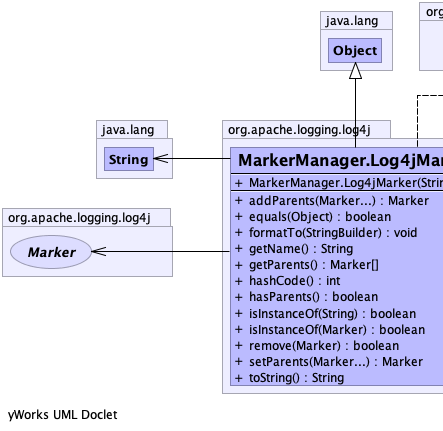
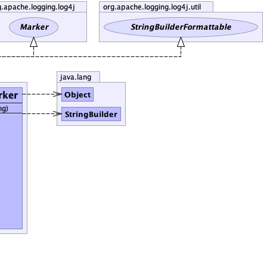

public static class MarkerManager.Log4jMarker extends java.lang.Object implements Marker, StringBuilderFormattable
The actual Marker implementation.
Internal note: We could make this class package private instead of public if the class
org.apache.logging.log4j.core.jackson.MarkerMixIn
is moved to this package and would of course stay in its current module.
|  |  |
| Constructor and Description |
|---|
Log4jMarker(java.lang.String name)
Constructs a new Marker.
|
| Modifier and Type | Method and Description |
|---|---|
Marker |
addParents(Marker... parentMarkers)
Adds a Marker as a parent to this Marker.
|
boolean |
equals(java.lang.Object o)
Returns true if the given marker has the same name as this marker.
|
void |
formatTo(java.lang.StringBuilder sb)
Writes a text representation of this object into the specified
StringBuilder, ideally without allocating
temporary objects. |
java.lang.String |
getName()
Returns the name of this Marker.
|
Marker[] |
getParents()
Returns a list of parents of this Marker.
|
int |
hashCode()
Returns a hash code value based on the name of this marker.
|
boolean |
hasParents()
Indicates whether this Marker has references to any other Markers.
|
boolean |
isInstanceOf(Marker marker)
Checks whether this Marker is an instance of the specified Marker.
|
boolean |
isInstanceOf(java.lang.String markerName)
Checks whether this Marker is an instance of the specified Marker.
|
boolean |
remove(Marker parent)
Removes the specified Marker as a parent of this Marker.
|
Marker |
setParents(Marker... markers)
Replaces the set of parent Markers with the provided Markers.
|
java.lang.String |
toString() |
public Log4jMarker(java.lang.String name)
name - the name of the Marker.java.lang.IllegalArgumentException - if the argument is nullpublic Marker addParents(Marker... parentMarkers)
MarkeraddParents in interface MarkerparentMarkers - The parent markers to add.public boolean remove(Marker parent)
Markerpublic Marker setParents(Marker... markers)
MarkersetParents in interface Markermarkers - The new set of parent Markers or null to clear the parents.public java.lang.String getName()
Markerpublic Marker[] getParents()
MarkergetParents in interface Markernull if this Marker has no parents.public boolean hasParents()
MarkerhasParents in interface Markertrue if the Marker has parent Markerspublic boolean isInstanceOf(Marker marker)
MarkerisInstanceOf in interface Markermarker - The Marker to check.true if this Marker or one of its ancestors is the specified Marker, false otherwise.public boolean isInstanceOf(java.lang.String markerName)
MarkerisInstanceOf in interface MarkermarkerName - The name of the Marker.true if this Marker or one of its ancestors matches the specified name, false otherwise.public boolean equals(java.lang.Object o)
Markerpublic int hashCode()
Markerpublic java.lang.String toString()
toString in class java.lang.Objectpublic void formatTo(java.lang.StringBuilder sb)
StringBuilderFormattableStringBuilder, ideally without allocating
temporary objects.formatTo in interface StringBuilderFormattablesb - the StringBuilder to write into